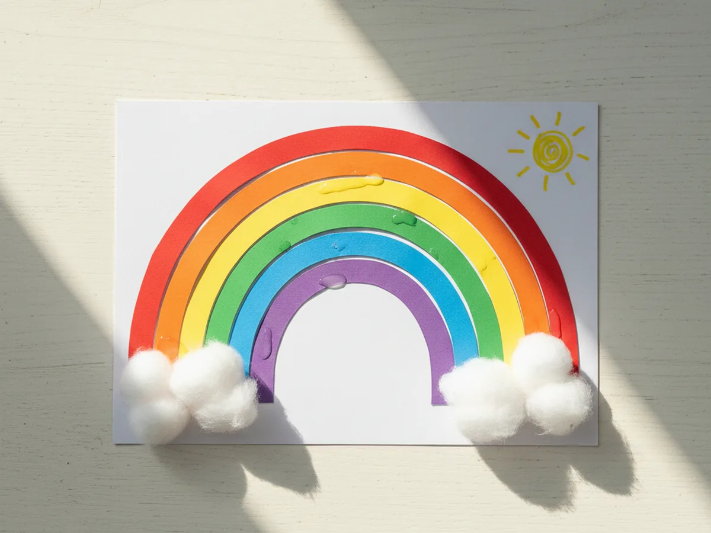
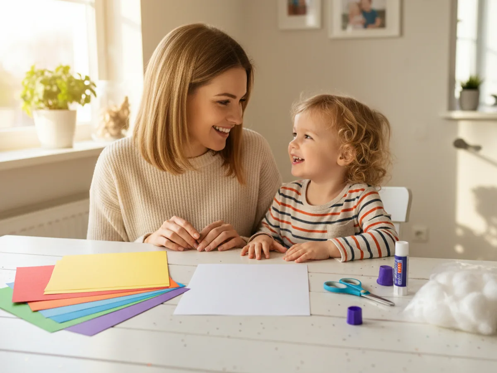
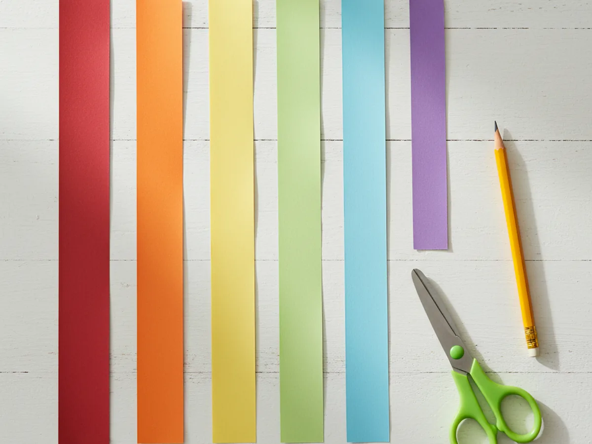
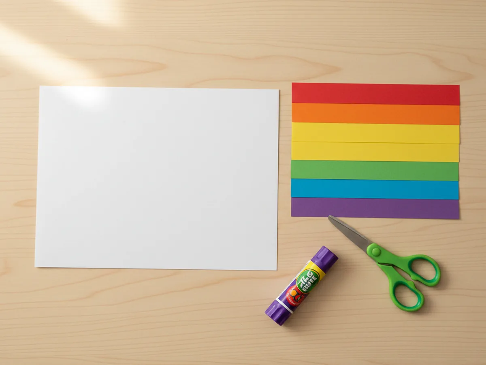
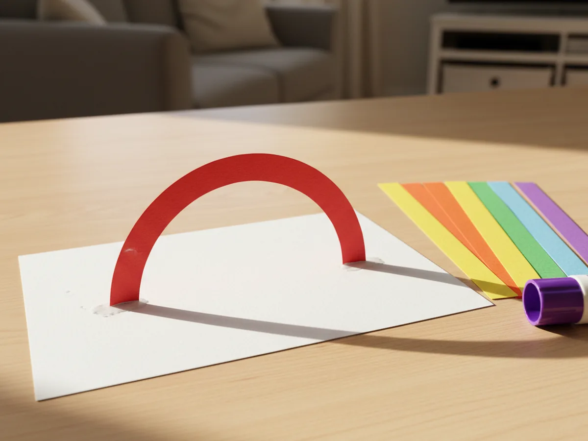
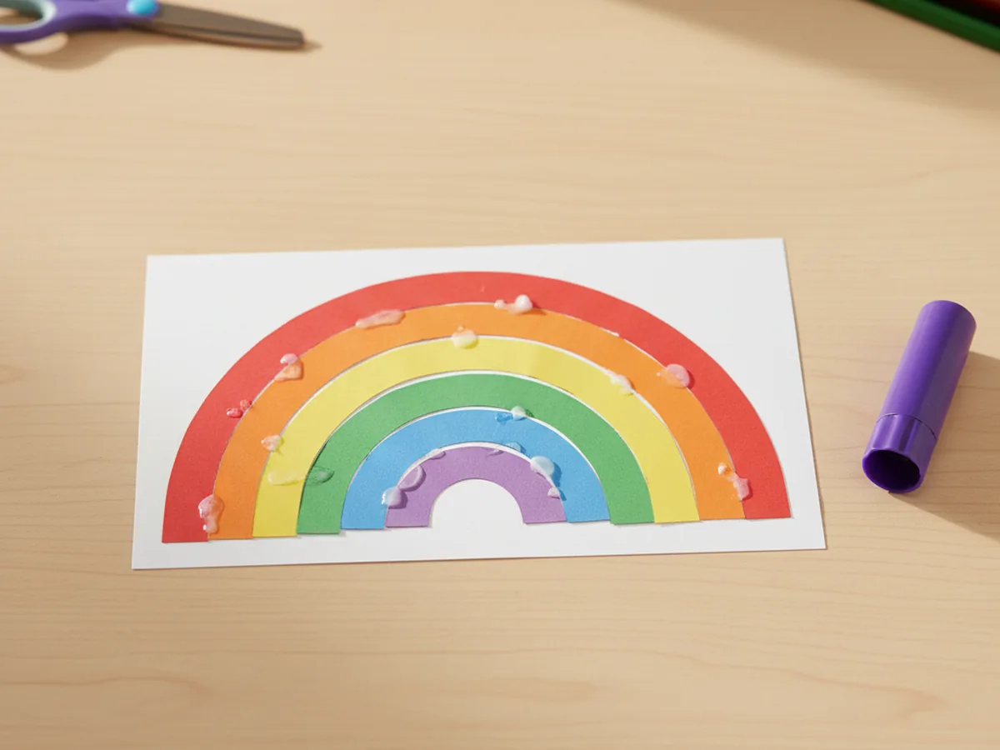
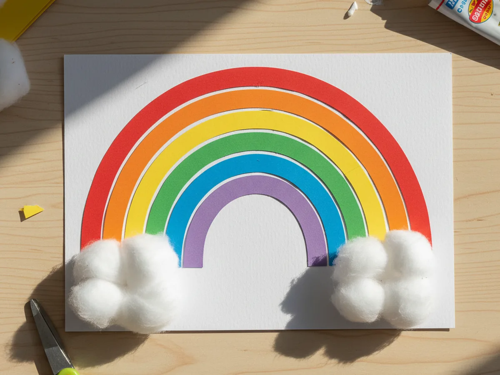
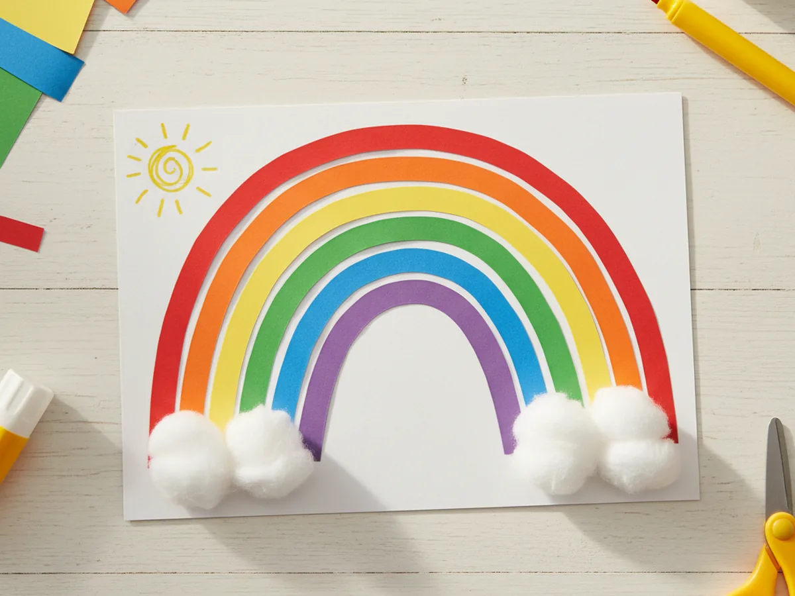

If you have a few sheets of brightly colored construction paper at home, you and your little one are about thirty minutes away from one of the cheeriest projects on your fridge. This rainbow paper craft uses six simple paper strips, a piece of white cardstock, a glue stick, and a couple of cotton balls. The result is a soft, springy, smile-worthy rainbow your child will want to show every grandparent in the family. 🌈
What makes this easy rainbow paper craft so lovely is that nothing is fragile or fiddly. Your child gets to pick the colors, bend the strips into a sweet arch, and watch the rainbow grow larger with every glued layer. There is no paint, no glitter, and no perfect cutting required. Just a calm afternoon, a few simple shapes, and a finished rainbow that looks far more impressive than the small effort it took.
Why Kids Love This Craft
Rainbows hold a special little place in a kid's imagination. They feel magical, hopeful, and just a tiny bit silly, and that is exactly the energy this rainbow paper craft brings to the table. Most kids will smile the moment they see the bright stack of paper colors waiting in front of them. Even before any cutting starts, they are already excited.
Beyond the joy, this simple rainbow paper craft is great for fine motor practice. Cutting the long paper strips builds scissor skills, bending each strip into a curve teaches careful hand control, and lining up the colors in rainbow order is a sneaky little color-recognition lesson dressed up as play. Younger kids who are still learning their colors get to practice red, orange, yellow, green, blue, and purple in the most natural way.
Then there is the cotton ball moment, which is honestly one of the best parts. Pulling cotton balls into soft, fluffy clouds is satisfying for any age, and it gives the finished paper rainbow a sweet, dreamy quality. Your little one will hold up the finished rainbow proudly and your fridge will glow a little brighter for the rest of the week. 💛

What You'll Need
Here is everything you need for this rainbow paper craft tutorial. Lay the supplies out before you start so your child can dive in without waiting around.
- Crayola Construction Paper (240 sheets, assorted colors), gives you all six rainbow colors plus extras for variations.
- Neenah Heavyweight White Cardstock (185 sheets), sturdy enough to hold the rainbow strips and clouds without buckling.
- Fiskars Pointed-Tip Kids Scissors, easy for small hands to use on long paper strips.
- Elmer's Disappearing Purple Glue Sticks (30 pack), washable and dries clear, perfect for sticking strips and clouds.
- Cliganic Organic Super Jumbo Cotton Balls (100 count), fluff up beautifully into soft little clouds at each end of the rainbow.
- Crayola Broad Line Markers (10 classic colors), for adding a sun, smile, or any extra finishing touches.
- A pencil and ruler, for sketching the strips before cutting.
Step-by-Step Instructions
This rainbow paper craft moves through six friendly steps that build on each other. Take your time, follow along together, and let your child do as much as they comfortably can.
Step 1: Cut the Six Rainbow Paper Strips
Start by gathering one sheet each of red, orange, yellow, green, blue, and purple construction paper. With a pencil and ruler, draw six long strips, each about one inch wide. Cut the red strip the longest, then make each following strip slightly shorter than the one before. This gentle size change is what allows the strips to nest neatly into a rainbow arch later on.

Step 2: Prepare the White Cardstock Base
Take a sheet of white cardstock and trim it into a wide rectangle, or round off the corners gently to create a cloud-shaped sky background. The cardstock will hold the entire rainbow paper craft together, so a slightly thicker piece is best. A standard 8.5 by 11 inch sheet, used in landscape orientation, gives plenty of room for the arch and the clouds at the ends.
Lay the cardstock flat in front of your child, with the long edge facing them. This is the sky, and the rainbow is about to bloom across it.

Step 3: Glue the Red Arch Onto the Base
Pick up the longest red strip and gently bend it into a soft arch shape. Do not crease it. Just curve it with your fingers. Add a small dab of glue stick to each end of the strip, then press the ends down onto the white cardstock so the strip stands up in a rainbow arch shape across the sky.
Hold each end down for a few seconds while the glue grabs. The red arch is the outer edge of the paper rainbow, and every other color will tuck inside it.

Step 4: Add the Remaining Rainbow Colors
Now repeat the same gentle bend-and-glue motion with the orange, yellow, green, blue, and purple strips, in that exact rainbow order. Each strip nests inside the previous one, with the slightly shorter length helping the arch curve naturally. Press the ends of each color firmly so they stick well to the cardstock.
By the time the purple strip is in place, you will both be smiling. A full rainbow paper craft arch will be sitting proudly across the white sky, and your little one will already be telling you what to do with it next. 🎨

Step 5: Add the Cotton Ball Clouds
Pull two or three cotton balls apart slightly so they look soft and fluffy, then squish them together to form a small cloud. Add a generous swipe of glue stick at the bottom-left corner of the rainbow, where the strips meet the cardstock, and press the cotton ball cloud down firmly. Repeat on the bottom-right corner with another fluffy cloud.
The clouds anchor the rainbow visually and hide any glue marks at the bottom of the arch. They also feel wonderful to touch, which most little kids love.

Step 6: Let It Dry and Add Finishing Touches
Set the finished rainbow flat on a clean surface for a few minutes so the glue can fully set. While you wait, this is the perfect moment to add finishing touches with markers. A little yellow sun in the corner, a smiling face on one of the clouds, or your child's name in friendly letters all turn the project into a personal keepsake.
Once everything is dry, the rainbow paper craft is ready to be displayed on the fridge, taped to a bedroom wall, or sent to a grandparent in the mail. Your child will love seeing their bright rainbow up where everyone can admire it. ✨

Variations to Try
Tissue Paper Rainbow: Skip the construction paper strips and let your child tear small pieces of red, orange, yellow, green, blue, and purple tissue paper. Glue the torn pieces directly onto a pencil-drawn arch on the cardstock to create a soft, painterly rainbow. This version is wonderful for toddlers who are not quite ready for scissors.
Handprint Rainbow: Trace your child's hand on each rainbow color, cut the handprints out, and arrange them in an arch instead of using strips. The result is a sweet keepsake that captures their hand size at this age and turns the craft into a lasting memory piece.
Rainbow Mobile: Cut the rainbow into a freestanding strip arch, then thread invisible string through each end and hang it from a small wooden dowel. The mobile gently turns when a window is open and adds a soft pop of color to a child's bedroom.
Final Thoughts
This rainbow paper craft is one of those quietly perfect projects that gives you a calm, joyful afternoon with very little setup or cleanup. The supplies are simple, the steps are forgiving, and the finished rainbow looks far cuter than the small effort suggests. Whether you display it on the fridge, tuck it inside a card to a grandparent, or use it for a rainy-day pick-me-up, you both walk away with a sweet handmade keepsake and a happy memory of the afternoon you made it together.
If your child finishes their first paper rainbow, I would love to see it. Save this article on Pinterest so other craft-loving mamas can find it easily. Happy crafting!
More Crafts You'll Love
If your little one enjoyed this rainbow paper craft, they will love these other cheerful paper projects too: